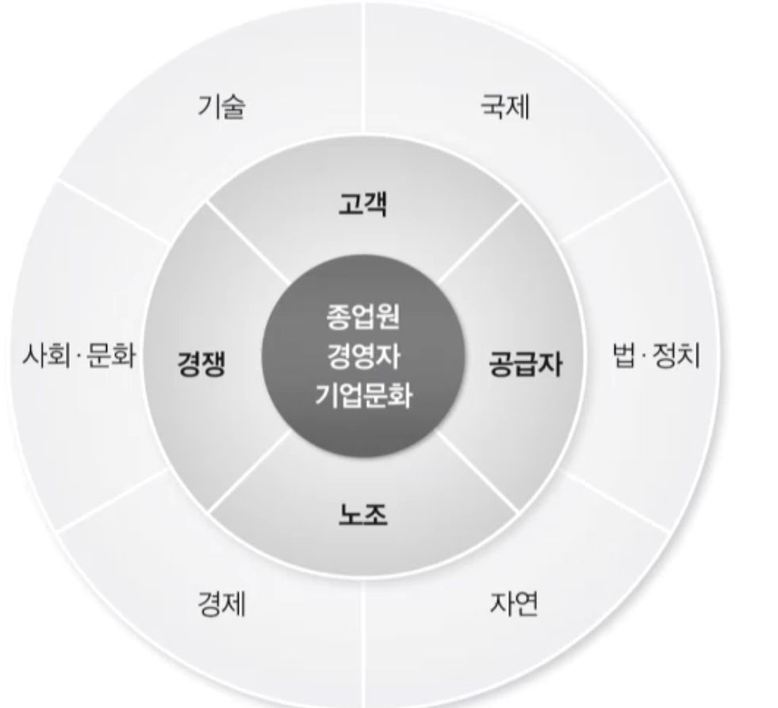
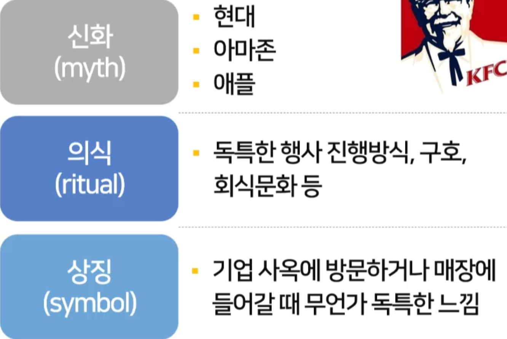
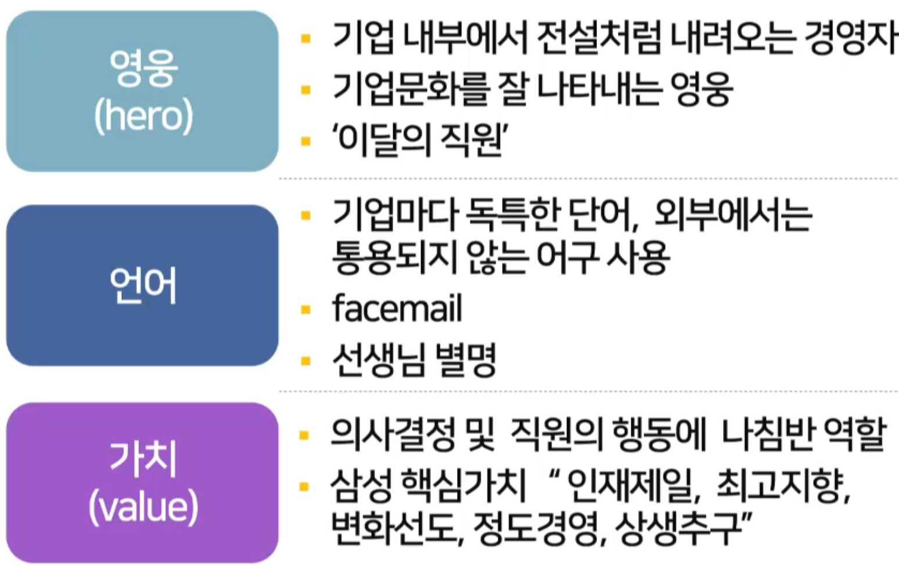

06강 경영환경
목차
경영환경의 중요성과 환경의 유형
외부환경
기업 내부환경: 기업문화
경영환경의 중요성과 환경의 유형
모든 사업 분야에서 환경은 매우 동태적
환경의 조그만 변화를 파악하여 민첩하게 반응하는 것이 경영자의 책무

가장 외부에 있는 기술,국제,법-정치,자연,경제,사회-문화은 외부환경-일반환경을 말하며, 고객,공급자,노조,경쟁은 외부환경-과업환경을 말합니다.
내부환경은 종업원,경영자,기업문화를 말합니다.
외부환경
외부환경
조직에 영향을 미칠 가능성이 있는 조직 외부의 모든 요소
- 일반환경
기업에 간접적+장기적으로 영향을 미치는 거시 환경요소
예) 기술,자연,사회문화,경제,법 정치,국제환경
- 과업관경
기업에 가까이 있고 일상 경영활동에 크게 영향을 미칠 수 있는 요소
예) 고객,경쟁자,공급자,사내노조등
일반환경
국제환경
국경을 넘는 경영활동에는 특수한 문제가 따르며, 해외에서 발생한 사건의 영향을 피해갈 수 없음.
국제환경은 기업 경영의 형태를 근본적으로 변화시키고 있음
기술환경
기술과 과학의 진보는 기업 경영에 크게 영향을 미침
기술 환경의 변화에 따라 기업 경영은 새로운 국면을 맞이하게 될 것임
전자 기기의 융합 실현 - 스마트폰
새로운 제품의 출현: 스마트폰, 인터넷 및 모바일 게임
4차산업혁명
초연결,초지능 : AI,클라우드 컴퓨팅,블록체인,로봇,나노기술,사물인터넷,무인자동차
정치 법 환경
정치 법 환경은 경영에 심각한 영향을 미침
독점,담합 규제
안전,종업우너 건강입법
환경 입법
법인세
시민단체,노동조합 연맹등 압력 단체
자연환경
기업이 사용하는 천연자원은 한정
제품의 생산,사용 ,폐기하는 과정에서 자연환경에 유해한 영향
과업환경
조직에 직접 영향을 미치는 환경요소
경쟁자,공급자,고객,주주,사내노조등으로 말함
고객
조직이 생한한 생산물의 구매자로서 조직의 성공 결정 - 점점 커진다 (인터넷 발전으로)
경쟁자
경쟁자의 존재는 기업 경영에 직접적 영향
주주
이해 대변할 수 있는 이사 선임,경영 책임 물어 경영자 교체 시도 (점점 늘어남)
사내노조
기업 내 노동자 대표하는 노조는 경영에 직접적 영향력 행사
기업 내부환경: 기업문화
기업문화
기업문화(corporate culture)
조직의 구성원끼리 혹은 외부 사람에게 반응하는 양식을 결정짓는 공유된 의미(meaning)와 신념(belief) 체계
모든 조직은 시간을 두고 서서히 형성되고 변화하는 상징,의식,신화,가치를 가짐
조직이 문제를 정의하고 분석하고 해결하는 과정을 결정
기업문화의 일곱 가지 요인
치밀함: 세부 사항에 주의를 기울이고 준석하고 정밀하게 처리하려는 정도
성과 지향: 과정보다 결과에 집착하는 정도
사람중심: 경영자의 결정과정에 기업 내의 사람들이 미치는 영향을 고려하는 정도
팀중심: 개인보다팀을 중심으로 업무가 진행되는 정도
공격성: 직원이 협조적이기보다 도전적이로 경쟁적인 정도
안정성: 조직이 현재를 유지하기 위한 결정을 내리고 행동하는 정도
혁신과 위험 감수: 종업원에게 위험을 감수해 가며 혁신하기를 권장하는 정도
7가지 정도로 기업 문화를 평가할 수 있다.
일곱 가지 요소가 종합적으로 기업 문화를 결정
한 두 가지 요소가 현저하여 그것으로 기업문화가 결정되기도 함
실제로 기업마다 형성된 기업문화의 강력함 정도는 다름
기업문화의 형성과 확산
기업문화는 기업이 속한 산업에 따라 차이
패션산업 vs 일반 제조업(치밀함이 중요,보수적)
등산장비 업체로 널리 알려진 파타고니아 - 독특한 기업문화로 야외활동이 있다.
스타벅스 - 교육이 중요된 기업 = 사회화
기업문화는 다양한 방식으로 직원에게 전파됨

신화는 재밋는 이야기를 이야기하는 걸 말합니다. 브랜드 명도 기업을 나타내는 상징물입니다.

가치는 정의하기 어려운 요소입니다. 영웅이나 상징은 쉽게 나타날 수 있으나 자세히 보지 않으면 그런 가치가 있는지 모를 수 있습니다.
문화가 경영 과정에 미치는 영향
계획과정
사업의 범위를 정하고 담당자를 정하고 자급을 수집하는 과정을 말합니다.
이런 업무를 다룬다는건 치밀함 정도가 굉장히 중요할 수 있고, 또는 다른 기업 문화는 시간을 들이지 않고 빠르게 실행하는 것을 중요할 수도 있음
사업의 범위,수행해야 하는 활동, 담당자 혹은 부서 결정 및 자금 수금방법 마련
당면한 환경 요소도 분석해야 함
치밀함 , 위험 감수 ,팀 중심
조직과정
세부 조직에 부여하는 자율성의 정도 결정
개인중심 혹은 팀 중심
리드과정
리더십 스타일이 매우 중요
사람중 시문화 - 관계중심 리더십
성과중심 문화 - 과업 중심 리더십,엄격한 조직운영(레스토랑은 엄격한 조직운영이 될 확률이 높다.)
통제과정
직원의 자율에 맡길 것인지 아니면 외부조직에 일임할 것인지 결정
직원의 성과 측정 기준 설정
성과지향문화: 절차 무시하더라도 성과, 예산 초과에 관용
치밀함 중시문화: 예산 절약 부정적 평가 - 예산을 남기는건 치밀하지 못했다는 것.
연습문제
기업문화의 정의로 적절한 것은?
문화는 공동체가 함께 공유하는 의미와 신념 체계로 공동체의 구성원의 정체성의 근간이 된다. 흔히 말하는 문화활동이라고 할 때 문화와는 의미가 다르다.